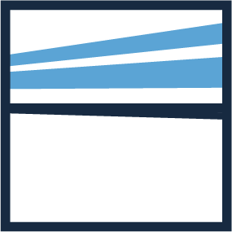
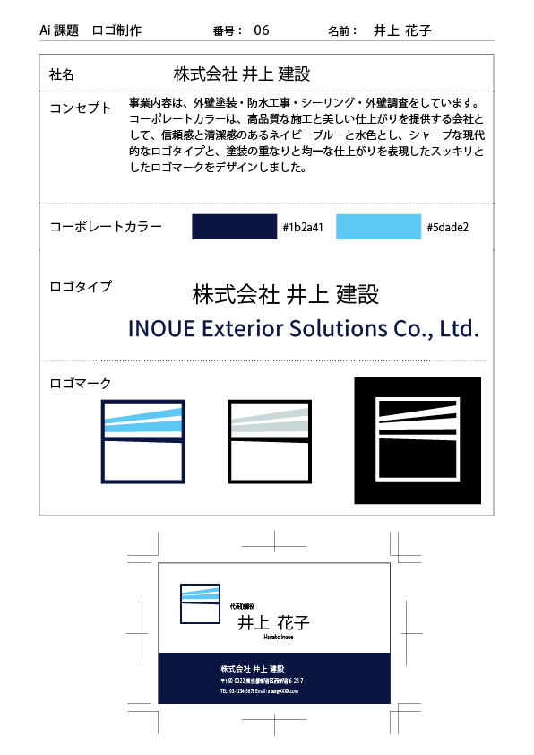
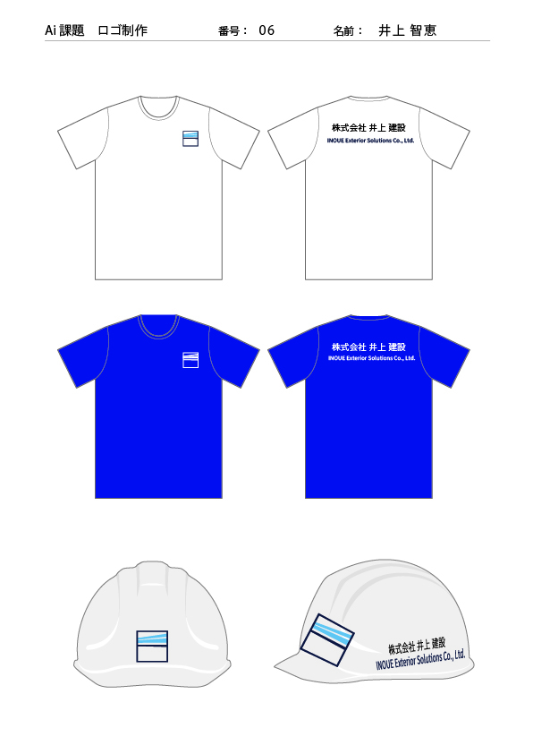

Logo Design
外壁塗装会社ロゴ
外壁塗装・防水工事・シーリング工事を行う建設会社を想定したロゴデザインです。
塗装のラインや施工面をイメージし、シンプルでスタイリッシュなロゴに仕上げました。

概要
外壁塗装・防水工事・シーリング工事を行う建設会社を想定したロゴデザインです。 塗装のラインや施工面をイメージし、シンプルでスタイリッシュなロゴに仕上げました。
制作意図
直線的なデザインを用いることで、施工の丁寧さやシャープな印象を表現しました。 企業ロゴとしての視認性と展開のしやすさを意識して制作しています。
工夫した点
- ライン表現で塗装や施工イメージを表現しました。
- ネイビーとブルーを使用し、清潔感と信頼感を意識しています。
- シンプルな構成にすることで、ユニフォームやヘルメットにも展開しやすいデザインにしました。
- Webや印刷物など幅広い媒体で使いやすいロゴを目指しました。
制作範囲
Logo Design
使用ツール
Illustrator
制作資料・展開例

